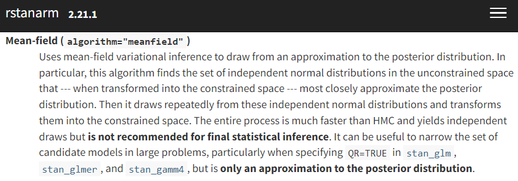
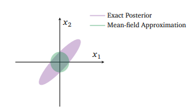
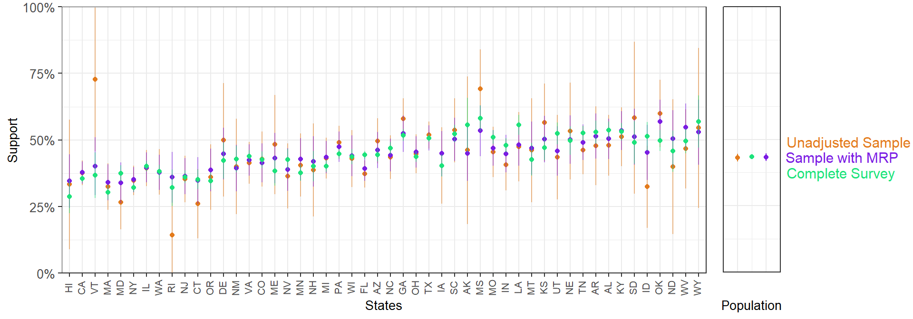

# Fit in stan_glmer
fit <- stan_glmer(abortion ~ (1 | state) + (1 | eth) + (1 | educ) + male +
(1 | male:eth) + (1 | educ:age) + (1 | educ:eth) +
repvote + factor(region),
family = binomial(link = "logit"),
data = cces_df,
prior = normal(0, 1, autoscale = TRUE),
prior_covariance = decov(scale = 0.50),
adapt_delta = 0.99,
refresh = 0,
seed = 605)This post introduces a series of posts I intend to write, exploring using Variational Inference to massively speed up running complex survey estimation models like variants of MRP while aiming to keep approximation error from completely ruining the model.
The rough plan for the series is as follows:
- (This post) Introducing the Problem- Why is VI useful, why VI can produce spherical cows
- How far does iteration on classic VI algorithms like mean-field and full rank get us?
- Some theory on why posterior approximation with VI can be so poor
- Seeing if some more sophisticated techniques like normalizing flows help
Motivation for series
I learn well by explaining things to others, and I’ve been particularly excited to learn about variational inference and ways to improve it over the past few months. There are lots of Bayesian models I would like to fit, especially my political work, that I would categorize as being incredibly useful, but on the edge of practically acceptable run times. For example, the somewhat but not particularly complex model I’ll use as a running example for the series takes ~8 hours to fix on 60k observations.
Having a model run overnight or for a full work day can be fine sometimes, but what if there is a more urgent need for the results? What if we need to iterate to find the “right” model? What if the predictions from this model need to feed into a later one? How constrained do we feel about adding just a little bit more complexity to the model, or increasing our N size just a bit more?
If we can get VI to fit well, we can make complex Bayesian models a lot more practical to use in a wider variety of scenarios, and maybe even extend the complexity of what we can build given time and resource constraints.
Spherical Cow Sadness
I’ve got that…


If VI can make Bayesian inference much faster, what’s the catch? The above two images encapsulate the problem pretty well. First, as the left screenshot from rstanarm’s documentation shows, variational inference requires a (bold text warning requiring) set of approximating distribution choices in order to be tractable to optimize. On the right, in their survey paper on VI, Blei et al., 2018 are showing one of the potential posterior distorting consequences of our choice to approximate.
So stepping back for a second, we’ve taken a problem for which there’s usually no closed form solution (Bayesian inference), where even the best approximation algorithm we can usually use (MCMC) isn’t always enough for valid inference without very careful validation and tinkering. Then we decided our approximation could do with being more approximate.
That was perhaps an overly bleak description, but it should give some intuition why this is a hard problem. We want to choose some method of approximating our posterior such that it is amenable to optimization-based solving instead of requiring sampling, but not trade away our ability to correctly understand the full complexity of the posterior distribution1.
Introducing MRP and our running example
While I’m mostly focused on the way we choose to actually fit a given model with this series, here’s a super quick review of the intuition in building a MRP model. If you want a more complete introduction, Kastellec’s MRP Primer is a great starting point.
MRP casts estimation of a population quantity of interest \theta as a prediction problem. That is, instead of the more traditional approach of like simple raked weights, MRP leans more heavily on modeling and then poststratification to make the estimates representative.
To sketch out the steps-
- Either gather or run a survey or collection of surveys that collect both information on the outcome of interest, y, and a set of demographic and geographic predictors, \left(X_{1}, X_{2}, X_{3}, \ldots, X_{m}\right).
- Build a poststratification table, with population counts or estimated population counts N_{j} for each possible combination of the features gathered above. Each possible combination j is called a cell, one of J possible cells. For example, if we poststratified only on state, there would be J=51 (with DC) total cells; in practice, J is often several thousand.
- Build a model, usually a Bayesian multilevel regression, to predict y using the demographic characteristic from the survey or set of surveys, estimating model parameters along the way.
- Estimate y for each cell in the poststratification table, using the model built on the sample.
- Aggregate the cells to the population of interest, weighting by the N_{j}’s to obtain population level estimates: \theta_{\mathrm{POP}}=\frac{\sum_{j \in J} N_{j} \theta_{j}}{\sum_{j \in J} N_{J}}
Why would we want to do this over building more typical survey weights? To the extent your new model has desirable properties like the ability to incorporate priors, can partially pool to manage rare subpopulations where you don’t have a lot of sample, and so on, you can get the benefits of that more efficient model through MRP. Raking in its simplest form is really just a linear model; we have plenty of methods that can do better. Outside of bayesian multilevel models which are the most common, there’s an increasing literature on using a wide variety of machine learning algorithms like BART2 to do the estimation stage; Andrew Gelman calls this RRP.
Rather than reinvent the wheel, I’ll follow the lead of the excellent Multilevel Regression and Poststratification Case Studies by Lopez-Martin, Philips, and Gelman, and model survey binary responses from the 2018 CCES for the following question:
Allow employers to decline coverage of abortions in insurance plans (Support / Oppose)
From the CCES, we get information on each participant’s state, age, gender, ethnicity, education level. Supplementing this individual level data, we also include region flags for each state, and Republican vote share in the 2016 election- these state level predictors have been shown to be critical for getting strong MRP estimates by Lax and Philips (2009) and others. and If you’d like deeper detail on the dataset itself, I’d refer you to this part MRP case study.
Using these, we setup the model for Pr(y_i = 1) the probability of supporting allowing employers to decline coverage of abortions in insurance plans as:
\begin{aligned} Pr(y_i = 1) =& logit^{-1}( \gamma^0 + \alpha_{\rm s[i]}^{\rm state} + \alpha_{\rm a[i]}^{\rm age} + \alpha_{\rm r[i]}^{\rm eth} + \alpha_{\rm e[i]}^{\rm educ} + \beta^{\rm male} \cdot {\rm Male}_{\rm i} \\ &+ \alpha_{\rm g[i], r[i]}^{\rm male.eth} + \alpha_{\rm e[i], a[i]}^{\rm educ.age} + \alpha_{\rm e[i], r[i]}^{\rm educ.eth} + \gamma^{\rm south} \cdot {\rm South}_{\rm s} \\ &+ \gamma^{\rm northcentral} \cdot {\rm NorthCentral}_{\rm s} + \gamma^{\rm west} \cdot {\rm West}_{\rm s} + \gamma^{\rm repvote} \cdot {\rm RepVote}_{\rm s}) \end{aligned}
Where we incorporate pretty much all of our predictors as varying intercepts to allow for pooling across demographic and geographic characteristics:
\alpha_{\rm a}^{\rm age}: The effect of subject i’s age on the probability of supporting the statement.
\alpha_{\rm r}^{\rm eth}: The effect of subject i’s ethnicity on the probability of supporting the statement.
\alpha_{\rm e}^{\rm educ}: The effect of subject i’s education on the probability of supporting the statement.
\alpha_{\rm s}^{\rm state}: The effect of subject i’s state on the probability of supporting the statement.
\beta^{\rm male}: The average effect of being male on the probability of supporting abortion. Note that it doesn’t really make much sense to model a two category3 factor as a varying intercept.
\alpha_{\rm e,r}^{\rm male.eth}, \alpha_{\rm e,r}^{\rm educ.age}, \alpha_{\rm e,r}^{\rm educ.eth}: Are several reasonable guesses at important interactions for this question. We could add many more two way, or even some three way interactions here, but this is enough for my testing here.
\gamma^{\rm south}, \gamma^{\rm northcentral}, \gamma^{\rm west},\gamma^{\rm repvote}: are the state level predictors which are not represented as varying intercepts. Following the case study, I use \gamma’s for the state level coefficients, keeping \beta’s for individual coefficients. Note that Northeast is the base region of the region factor here, so it doesn’t get it’s own coefficient.
Stepping back for a second, let’s describe the complexity of this model in more general terms. This certainly isn’t state of the art for MRP, and you could definitely add in things like a lot more interactions, some varying slopes, non-univariate prior and/or pooling structure, or other elements to make this a more interesting model. That said, this is already clearly enough of a model to improve on simple raking in many cases, and it produces a nuanced enough posterior that we can feasibly imagine a bad approximation going all spherical cow shaped on us.
Why this dataset and this model for this series? The question we model itself isn’t super important- as long as we can expect some significant regional and demographic variation in the outcome we’ll be able to explore if VI smoothes away some posterior complexity that MCMC can capture. Drawing an example from the CCES is quite useful, as the 60k total sample is much larger than typical publicly available surveys, and so we can check behavior under larger N sizes. Practically, fitting this with rstanarm allows us to switch easily from a great MCMC implementation to a decent VI optimizer quickly for some early tests. Finally, the complexity and runtime of the model is a nice balance of being something that we can fit with MCMC in a not terrible amount of time for comparison’s sake, and something challenging enough that it should teach us something about VI’s ability to handle non-toy models of the world.
Fitting this4 with MCMC in rstanarm is as simple as:
Since it isn’t relevant for the rest of my discussion here, I’ll summarize the model diagnostics here and say that this seems to be a pretty reasonable fit- no issues with divergences, and no issues with poor \hat{r}’s. Worth quickly pointing out that we did have to tune adapt_delta a bit to get no divergences though- even before getting to fitting this with VI, a model like this requires some adjustments to fit correctly.
With a model like this, we can produce state level predictions that have clearly benefited from being fit with a Bayesian multilevel model:

With a 5k sample, MRP lands much closer to the complete weighted survey than a 5k unweighted sample: neat. That’s certainly not a fully fair comparison, but it gives some intution around the promise of this approach.
Somewhat less neat is that even a 5k sample here takes about 13 minutes to fit. How does this change as we fit on more and more of the data?
| Sample Size | Runtime |
|---|---|
| 5,000 | 13 minutes |
| 10,000 | 44 minutes |
| 60,000 | 526 minutes (~8 hours!) |
As the table above should illustrate, if you’re fitting a decently complex Bayesian model on even somewhat large N sizes, you’re pretty quickly going to cap out what you can reasonably fit in a acceptable amount of time. If you’re scaling N past the above example, or deepening the modeling complexity, you’ll pretty quickly feel effectively locked out of using these models in fast-paced environments.
Hopefully fitting my running example has helped for building intution here. Even a reasonably complex Bayesian model can have some pretty desirable estimation properties. To make iterating on model quality faster, to scale our N or model complexity higher, or just to use a model like this day to day when fit time matters, we’d really like to scale these fitting times back. Can Variational Inference help?
Introducing Variational Inference
A first try at VI on this dataset
Footnotes
If I were that type of Bayesian, this is where I’d complain that if we screw this up badly enough, we might as well be frequentists or worse, machine learning folk.↩︎
In grad school, using BART as the estimator (also combining it with some portions of the model being estimated as multilevel models) was the focus of my masters thesis. This pairs the best parts of relatively black box machine learning sensibility with the advantages of still having a truly Bayesian model. With comparatively minimal iteration you can get a pretty decent set of MRP models that will be better than many basic versions of multilevel models fit early in the MRP literature. Of course, if you’re willing to spend a bunch of time iterating on the absolute best models for a given problem, and incorporate lots of problem specific knowledge into model forms you can and should do better than BARP. Also, a lot of pretty cool things you can do like jointly model multiple question responses at the same time aren’t going to be easily to implement unless you get way in the weeds of your own BART implementation.↩︎
Insert snark about CCES folks doing a poor job at gender exclusivity despite 80+ researchers working on it here.↩︎
Again, see the MRP case studies linked above if you want see all the data prep and draw manipulation here; I’ll be leaving out most such details that aren’t relevant for comparisons to fitting this model with VI from now on.↩︎
Reuse
Citation
BibTeX citation:
@online{timm2022,
author = {Andy Timm},
editor = {},
title = {Variational {Inference} for {MRP} with {Reliable} {Posterior}
{Distributions}},
date = {2022-09-28},
url = {https://andytimm.github.io/variational_mrp_pt1.html},
langid = {en}
}
For attribution, please cite this work as:
Andy Timm. 2022. “Variational Inference for MRP with Reliable
Posterior Distributions.” September 28, 2022. https://andytimm.github.io/variational_mrp_pt1.html.